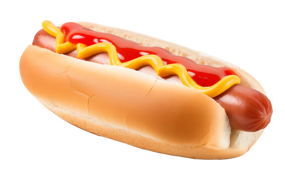

What is a Hotdog?

A hotdog is a popular food item consisting of a cooked sausage, typically
made from beef or pork, served in a sliced bun. It is often garnished with
mustard, ketchup, onions, mayonnaise, relish, sauerkraut, or cheese.
Hotdogs are commonly enjoyed at barbecues, sporting events, and street
fairs.